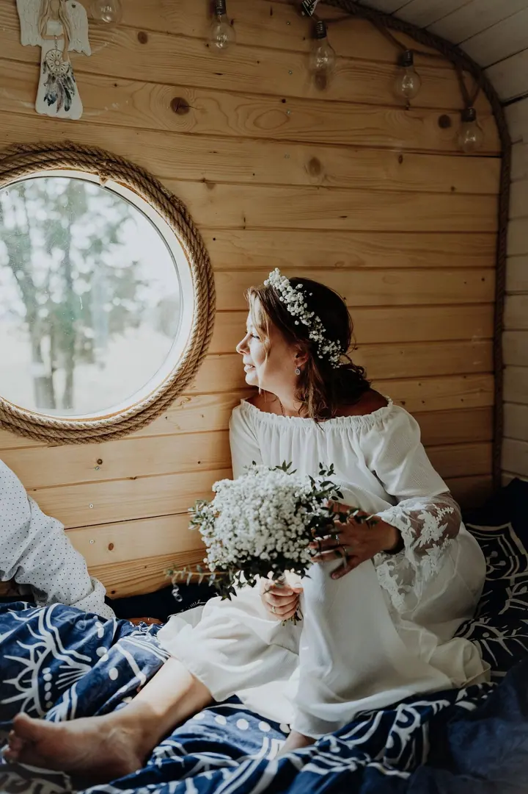
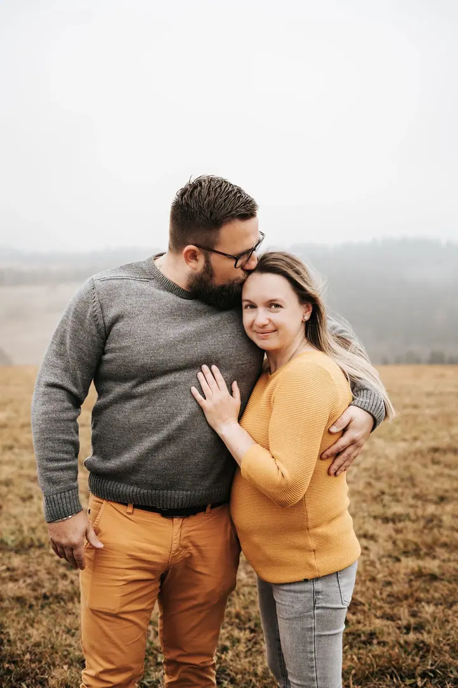
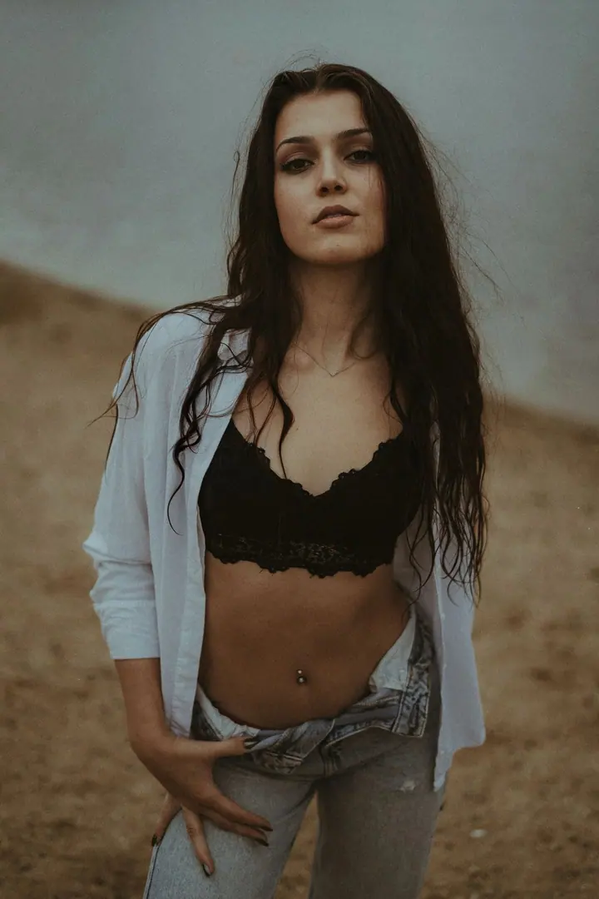
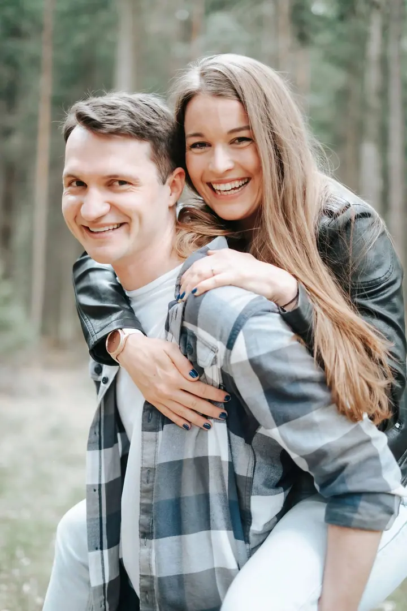
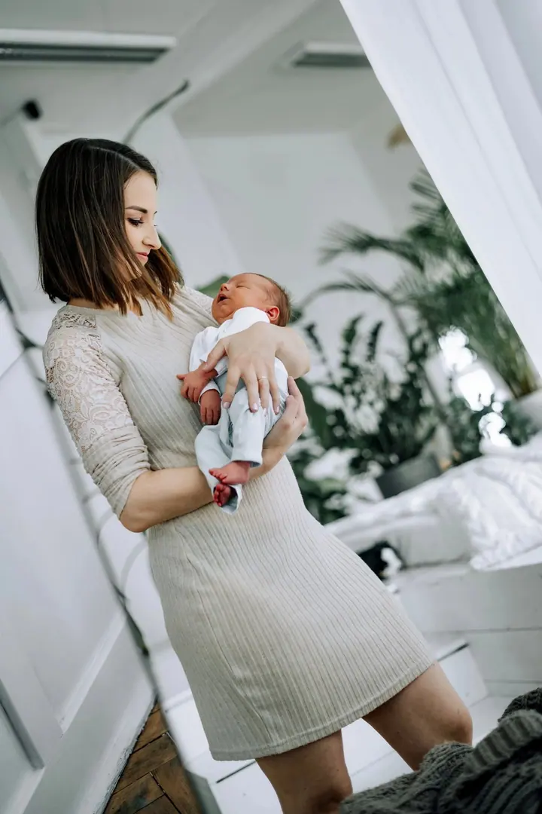
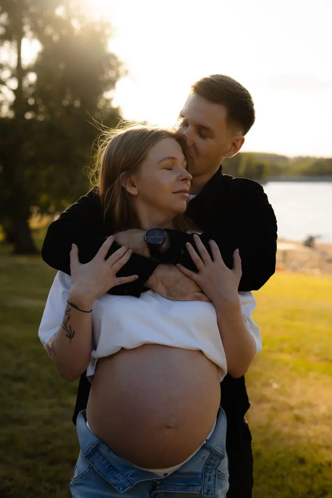
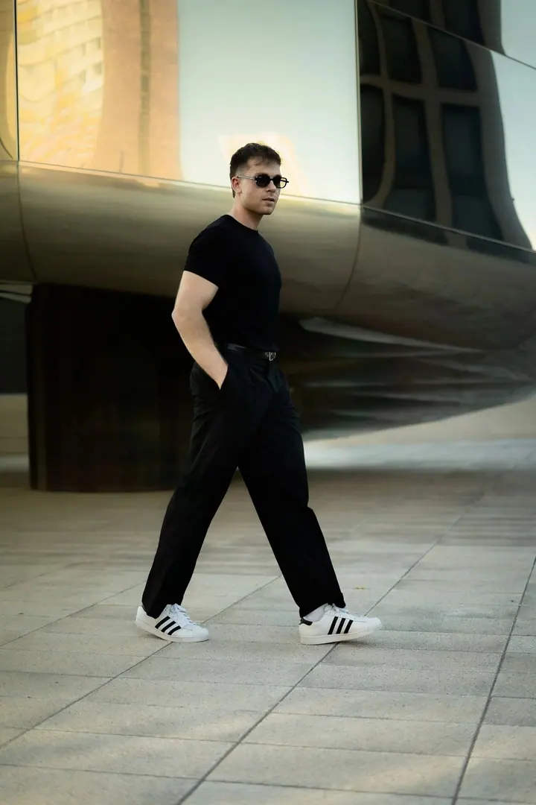
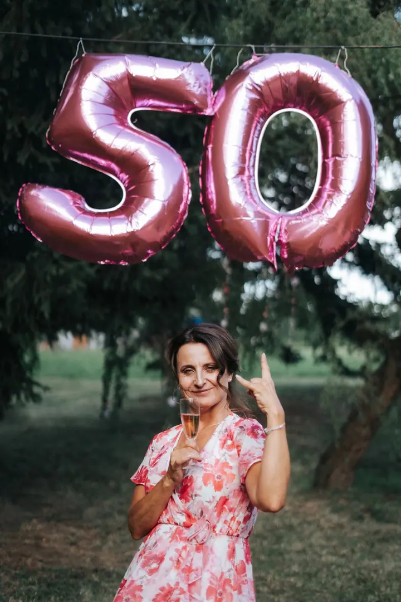

01 / 04
Svatební focení
Budu s vámi během dne tak, abyste si svatbu užili a nemuseli řešit foťák. Pomůžu, navedu a pohlídám emoce, detaily i atmosféru celého dne.
Zeptat se na termín→







Fotografie, které vypráví váš příběh
Zeptat se na termín →(01) Ahoj
Jmenuji se Andrea Rusnáková a fotím svatby , páry, těhotenství i rodiny v Praze a okolí. Ráda fotím i portréty a branding pro podnikatele . Pózovat umět nemusíte, celým focením vás provedu.
(02) Co fotím
01 / 04
Budu s vámi během dne tak, abyste si svatbu užili a nemuseli řešit foťák. Pomůžu, navedu a pohlídám emoce, detaily i atmosféru celého dne.
Zeptat se na termín→02 / 04
Klidná atmosféra a jemné vedení bez pózování. Děti nemusí sedět v klidu a fotit můžeme v přírodě, ve městě nebo u vás doma.
Zeptat se na termín→03 / 04
Nemusíte mít důvod, stačí chuť. Poradím s lokalitou, outfity i pózami, takže je opravdu nemusíte umět.
Zeptat se na termín→Dále nabízím
Fotografie pro web, LinkedIn i sociální sítě, které budou reprezentovat vás a vaši značku. Profesionálně, ale pořád lidsky.
↗(04) Postup
Od první zprávy po hotovou galerii.
Krok 1 z 4
Zavolejte, napište zprávu nebo e-mail s typem focení, přibližným termínem a místem. Odpovídám obvykle do 24 hodin.
Krok 2 z 4
Domluvíme se na stylu, lokalitě i termínu. Ráda poradím s outfity a nápady, aby focení sedělo právě vám.
Krok 3 z 4
Termín potvrdíme a já vám pošlu instrukce, abyste věděli, co vás čeká a na co se připravit.
Krok 4 z 4
Na focení vás povedu, takže se nemusíte bát. Pak fotky pečlivě upravím a předám vám je.
Smích vítán, nervozita povolena.
(05) Za objektivem
Fotografie je součástí mého života už řadu let. V roce 2019 jsem vystudovala obor fotografie na škole umění a designu v Brně, kde jsem získala cit pro detail, kompozici a práci s emocemi.
Po škole jsem šest let pracovala v logistice. Naučila jsem se tam komunikaci, organizaci a profesionálnímu přístupu ke klientům, a to dnes využívám u každého focení. Od roku 2024 se k fotografii vracím naplno a fotím svatby, firmy, e-shopy, páry, těhotenství, rodiny i portréty.
Mám ráda fotky, které nepůsobí strojeně. Fotím v Praze, ve Středočeském, Pardubickém a Královéhradeckém kraji a pravidelně i v Orlických horách. Domluvíme se česky i anglicky, a když zrovna nefotím lidi, fotím svět kolem sebe.
Andrea
Andrea Rusnáková · Svatební a portrétní fotografka
Vůbec ne, většina mých klientů to říká taky. Navedu vás a poradím s pózami. Za pár minut se budete smát a focení si užijete.
Párové focení začíná na 2 900 Kč, branding a osobní značka na 5 000 Kč a svatební balíčky stojí 8 000 až 19 999 Kč podle rozsahu a lokality. Když se vaše představa do balíčků nevejde, připravím nabídku na míru.
U párového, portrétního, těhotenského i rodinného focení dostanete 15 a více upravených fotografií.
Ano. V Praze je doprava zdarma, mimo Prahu účtuji 10 Kč/km. V Orlických horách fotím pravidelně, a tak tam dopravu řeším stejně jako v Praze. Po domluvě fotím po celé republice i v Evropě.
(07) Kontakt
Napište pár vět o tom, co si představujete, a termín, který se vám hodí.